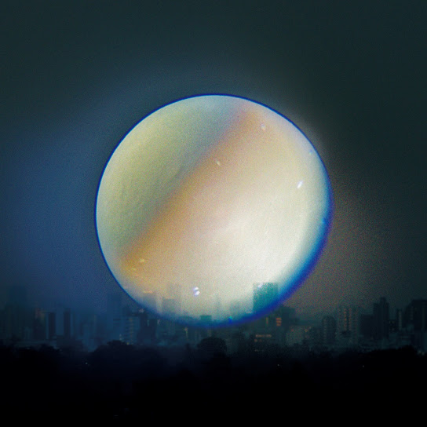

ATARAYO - 極夜
교쿠야
(극야)

1st - 極夜において月は語らず
교쿠야니 오이테 츠키와 카타라즈
(극야의 달은 침묵한다)
暁月夜空を見上げた
아카츠키즈쿠요 소라오 미아게타
(새벽 달밤 하늘을 올려다봤어)
儚く散った君が泳ぐ空
하카나쿠 칫타 키미가 오요구 소라
(덧없이 흩어진 네가 헤엄치는 하늘)
このまま何処か遠くへ逃げて
코노 마마 도코카 토-쿠에 니게테
(이대로 어딘가 먼 곳으로 도망쳐)
しまえればいっそ楽なのにな
시마에레바 잇소 라쿠나노니나
(버릴 수 있다면 차라리 편할 텐데)
残った記憶が
노콧타 키오쿠가
(남아있는 기억이)
こびり付いた痛みが
코비리츠이타 이타미가
(달라붙은 아픔이)
僕を離してくれないんだ
보쿠오 하나시테 쿠레나인다
(나를 놓아주지 않아)
最後の夜に散った
사이고노 요루니 칫타
(마지막 밤에 흩어진)
花火をまだ覚えている
하나비오 마다 오보에테 이루
(불꽃놀이를 아직 기억하고 있어)
月の船は漕ぎ出した
츠키노 후네와 코기다시타
(달의 배는 노를 저어 떠났어)
僕を残して君を乗せて
보쿠오 노코시테 키미오 노세테
(나를 남겨두고 너를 태우고)
どれだけ手を伸ばしたって
도레다케 테오 노바시탓테
(아무리 손을 뻗어봐도)
届くことの無い場所へ
토도쿠 코토노 나이 바쇼에
(닿을 수 없는 곳으로)
この夜が明けたら
코노 요루가 아케타라
(이 밤이 밝으면)
君は空に溶ける
키미와 소라니 토케루
(너는 하늘에 녹아들어)
明け方の空
아케가타노 소라
(새벽 하늘)
まだ残る月に
마다 노코루 츠키니
(아직 남아있는 달에)
思わず触れて
오모와즈 후레테
(무심코 닿고)
しまいたくなった
시마이타쿠 낫타
(싶어졌어)
残った香りが
노콧타 카오리가
(남아있는 향기가)
傷みきった心が
이타미킷타 코코로가
(상처 입은 마음이)
君を忘れてくれないんだ
키미오 와스레테 쿠레나인다
(너를 잊게 해주지 않아)
最後の夜に散った
사이고노 요루니 칫타
(마지막 밤에 흩어진)
花火をまだ覚えている
하나비오 마다 오보에테 이루
(불꽃놀이를 아직 기억하고 있어)
月の船は漕ぎ出した
츠키노 후네와 코기다시타
(달의 배는 노를 저어 떠났어)
僕を残して君を乗せて
보쿠오 노코시테 키미오 노세테
(나를 남겨두고 너를 태우고)
どれだけ手を伸ばしたって
도레다케 테오 노바시탓테
(아무리 손을 뻗어봐도)
届くことの無い場所へ
토도쿠 코토노 나이 바쇼에
(닿을 수 없는 곳으로)
この夜が明けたら
코노 요루가 아케타라
(이 밤이 밝으면)
君は空に消える
키미와 소라니 키에루
(너는 하늘로 사라져)
溶けてしまった君が
토케테 시맛타 키미가
(녹아버린 네가)
空で流した涙が雨と化して
소라데 나가시타 나미다가 아메토 카시테
(하늘에서 흘린 눈물이 비가 되어)
この世界に振り注げば
코노 세카이니 후리소소게바
(이 세상에 쏟아진다면)
肌で君を感じられるのに
하다데 키미오 칸지라레루노니
(피부로 너를 느낄 수 있을 텐데)
忘れられないよな
와스레라레나이요나
(잊을 수 없겠지)
忘れてしまえよ
와스레테 시마에요
(잊어버려)
思い出してしまうな
오모이다시테 시마우나
(떠올리지 마)
思い出せないように
오모이다세나이 요-니
(떠올릴 수 없도록)
こんなに痛いなら
콘나니 이타이나라
(이렇게 아프다면)
いっそ僕ごと
잇소 보쿠고토
(차라리 나까지)
消えてしまえと
키에테 시마에토
(사라져버려라 하고)
願ってしまうんだ
네갓테 시마운다
(빌어버려)
最後の夜に散った
사이고노 요루니 칫타
(마지막 밤에 흩어진)
花火をまだ覚えている
하나비오 마다 오보에테 이루
(불꽃놀이를 아직 기억하고 있어)
月の船は漕ぎ出した
츠키노 후네와 코기다시타
(달의 배는 노를 저어 떠났어)
僕を残して君を乗せて
보쿠오 노코시테 키미오 노세테
(나를 남겨두고 너를 태우고)
どれだけ手を伸ばしたって
도레다케 테오 노바시탓테
(아무리 손을 뻗어봐도)
届くことの無い場所へ
토도쿠 코토노 나이 바쇼에
(닿을 수 없는 곳으로)
この夜が明けたら
코노 요루가 아케타라
(이 밤이 밝으면)
君は空溶かす
키미와 소라 토카스
(너는 하늘을 녹여)
それでもまだ覚えている
소레데모 마다 오보에테 이루
(그래도 아직 기억하고 있어)
花火は今年も咲くだろう
하나비와 코토시모 사쿠다로-
(불꽃놀이는 올해도 피겠지)
月の船は漕ぎ出した
츠키노 후네와 코기다시타
(달의 배는 노를 저어 떠났어)
僕を残して君を乗せて
보쿠오 노코시테 키미오 노세테
(나를 남겨두고 너를 태우고)
どれだけ手を伸ばしたって
도레다케 테오 노바시탓테
(아무리 손을 뻗어봐도)
届くことの無い明日へ
토도쿠 코토노 나이 아스에
(닿을 수 없는 내일로)
この夜が明けたら
코노 요루가 아케타라
(이 밤이 밝으면)
君は海に溶ける
키미와 우미니 토케루
(너는 바다에 녹아들어)